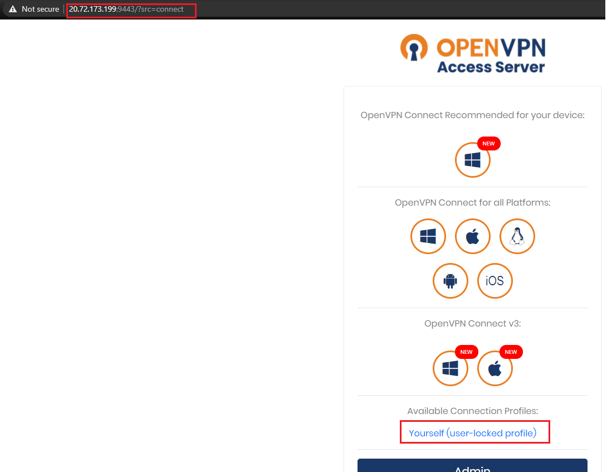

OpenVPN on AKS
OpenVPN on AKSQuick IntroSetupStep 1: Setting OpenVPN ServerPre-requisitesStepsCluster resources before implementing chartInstalling ChartVerifying the installationAccessing the OpenVPN ServerStep 2: Accessing OpenVPN Server and Pods in it's local network from a Linux VMWhat we needStepsCopying profile to Linux VM using SCPInstalling openvpn clientConnecting to the OpenVPN Server using the configuration profileTesting ConnectivityStep 3: Accessing OpenVPN Server and Pods in it's local network from a Pod in another ClusterWhat we need?Creating a Pod:Why NET_ADMIN capability is required by the Pod?Installing additional packages in the Pod:Copying Profile config to the Client Pod:Connecting to the VPN Server (error):Adding requirements to the Client Pod:Connecting to the VPN Server (success):Testing connectivity:Use Case for my client:
Quick Intro
What is OpenVPN?
OpenVPN is a virtual private network (VPN) system that implements techniques to create secure point-to-point or site-to-site connections in routed or bridged configurations and remote access facilities. It implements both client and server applications.
OpenVPN allows peers to authenticate each other using pre-shared secret keys, certificates or username/password. When used in a multiclient-server configuration, it allows the server to release an authentication certificate for every client, using signatures and certificate authority.
Source: https://en.wikipedia.org/wiki/OpenVPN
While we are at it, please contribute to Wikipedia, it is amazing, and deserves some support.
Setup
The setup is in 3 parts:
- Deploying an OpenVPN Server on a Pod in AKS
- Accessing AKS Cluster's Pods via Private IP through VPN Tunnel from a Linux Machine
- Accessing AKS Cluster's Pods via Private IP through VPN Tunnel from a Pod in another cluster.
Step 1: Setting OpenVPN Server
Pre-requisites
- AKS Cluster
- Helm v3 client installed on the local system
Steps
Connect to your AKS Cluster, and add the Helm Chart. For the sake of this simple lab, I will be using an existing Helm Chart available here.
Cluster resources before implementing chart
x$ kubectl get podsNAME READY STATUS RESTARTS AGEaks-helloworld-two-58bbb47f58-hctsg 1/1 Running 0 4d10haks-ssh 1/1 Running 1 4d10h$ kubectl get svcNAME TYPE CLUSTER-IP EXTERNAL-IP PORT(S) AGEaks-helloworld-two ClusterIP 10.0.224.176 <none> 80/TCP 4d10hkubernetes ClusterIP 10.0.0.1 <none> 443/TCP 49dInstalling Chart
xxxxxxxxxx$ helm repo add stenic https://stenic.github.io/helm-charts"stenic" already exists with the same configuration, skipping$ helm install my-release --set "service.type=LoadBalancer" --set "service.gui.type=LoadBalancer" --set "service.admin.type=LoadBalancer" stenic/openvpn-asNAME: my-releaseLAST DEPLOYED: Sat May 1 03:05:51 2021NAMESPACE: defaultSTATUS: deployedREVISION: 1TEST SUITE: NoneChart is installed. For the sake of this lab, I have exposed the Admin URLs also through LoadBalancer Service, while the default would be ClusterIP. More configurations options are available here.
Verifying the installation
After the installation finishes:
xxxxxxxxxx$ kubectl get pods -o wideNAME READY STATUS RESTARTS IP aks-helloworld-two-58bbb47f58-hctsg 1/1 Running 0 10.240.0.30 aks-ssh 1/1 Running 1 10.240.0.99 my-release-openvpn-as-7dc87fcbd7-wqfm5 1/1 Running 0 10.240.0.54 $ kubectl get svcNAME TYPE CLUSTER-IP EXTERNAL-IP PORT(S) aks-helloworld-two ClusterIP 10.0.224.176 <none> 80/TCP kubernetes ClusterIP 10.0.0.1 <none> 443/TCP my-release-openvpn-as-admin LoadBalancer 10.0.97.146 20.72.173.156 943:30491/TCP my-release-openvpn-as-gui LoadBalancer 10.0.118.238 20.72.173.219 944:31169/TCP my-release-openvpn-as-tcp LoadBalancer 10.0.31.142 20.72.173.199 9443:30197/TCPmy-release-openvpn-as-udp LoadBalancer 10.0.111.157 20.72.173.74 1194:32266/UDP NOTE: Make sure that you have allowed the above Ports in the Security Group for Subnet and VMSS.
The Chart is installed, and the Services are up.
Make a note of the External-IP of the Services for both, TCP and UDP.
Also, here, we will be trying to access the Pod aks-helloworld-two with IP 10.240.0.30 from an external network using the Pod IP itself.
Just for understanding, I get a TimedOut error when I try to access the Pod IP without connecting the VPN Client from my Linux VM:
xxxxxxxxxxroot@TheMachine:/home/azureuser# curl http://10.240.0.30/ -Icurl: (7) Failed to connect to 10.240.0.30 port 80: Connection timed outAccessing the OpenVPN Server
Now that the OpenVPN Services are up, let us access them:
Admin Portal:

VPN Server:

These URLs will prompt you for Username and Password, which I have used the default ones.
The OpenVPN Server is Up and Running!
Step 2: Accessing OpenVPN Server and Pods in it's local network from a Linux VM
What we need
- OpenVPN Client installed on the Linux VM
- Configuration Profile for the client to use
Steps
As highlighted above, you can download the Profile for connecting to Server.
On fetching the Profile, it looks like this:
xxxxxxxxxxsetenv FORWARD_COMPATIBLE 1clientserver-poll-timeout 4nobindremote 10.240.0.54 1194 udpremote 10.240.0.54 1194 udpremote 10.240.0.54 9443 tcpremote 10.240.0.54 1194 udpremote 10.240.0.54 1194 udpremote 10.240.0.54 1194 udpremote 10.240.0.54 1194 udpremote 10.240.0.54 1194 udpdev tundev-type tunns-cert-type serversetenv opt tls-version-min 1.0 or-highestreneg-sec 604800sndbuf 0rcvbuf 0auth-user-pass# NOTE: LZO commands are pushed by the Access Server at connect time.# NOTE: The below line doesn't disable LZO.comp-lzo noverb 3setenv PUSH_PEER_INFO## Then it has the CA, CRT and KEY file.The remote is pointed to the Private IP of the OpenVPN Server Pod's IP:

... we will change the Profile file to point to the Service's Load Balancer IP, instead of the Pod's IP, so that we can access it from outside the Cluster:
xxxxxxxxxxsetenv FORWARD_COMPATIBLE 1clientserver-poll-timeout 4nobindremote 20.72.173.74 1194 udpremote 20.72.173.74 1194 udpremote 20.72.173.199 9443 tcpremote 20.72.173.74 1194 udpremote 20.72.173.74 1194 udpremote 20.72.173.74 1194 udpremote 20.72.173.74 1194 udpremote 20.72.173.74 1194 udpdev tundev-type tunns-cert-type serversetenv opt tls-version-min 1.0 or-highestreneg-sec 604800sndbuf 0rcvbuf 0auth-user-pass# NOTE: LZO commands are pushed by the Access Server at connect time.# NOTE: The below line doesn't disable LZO.comp-lzo noverb 3setenv PUSH_PEER_INFOI already have an Ubuntu 18.04 VM ready with current IP 20.193.155.28. First, I will copy the Configuration Profile to this VM, and then install OpenVPN Client.
Note: I could have used my local Windows Machine as the VPN Client, but since it is associated with my company network, there are additional proxy and hops involved. For simplicity, I felt better in using a Linux VM for the lab.
Copying profile to Linux VM using SCP
From my Windows machine:
x
$ scp -i .\TheMachine_key.pem client.ovpn azureuser@20.193.155.28:/home/azureuser/client.ovpn 100% 9923 108.7KB/s 00:00Since I am using Key based authentication for accessing my Linux VM, the format for scp command is:
x
$ scp -i <path-to-key> <source-file-location> vm-user@<vm-ip>:<location-to-copy-file>I see the file on my Linux machine:
xxxxxxxxxx$ root@TheMachine:/home/azureuser# lsclient.ovpnInstalling openvpn client
xxxxxxxxxx$ root@TheMachine:/home/azureuser# apt-get install openvpnConnecting to the OpenVPN Server using the configuration profile
x
$ root@TheMachine:/home/azureuser# openvpn --config client.ovpnSat May 1 13:30:55 2021 OpenVPN 2.4.4 x86_64-pc-linux-gnu [SSL (OpenSSL)] [LZO] [LZ4] [EPOLL] [PKCS11] [MH/PKTINFO] [AEAD] built on May 14 2019Sat May 1 13:30:55 2021 library versions: OpenSSL 1.1.1 11 Sep 2018, LZO 2.08## Enter the User and Password at promptEnter Auth Username: altminEnter Auth Password: ********.........Sat May 1 13:31:10 2021 /sbin/ip route add 20.72.173.74/32 via 10.50.0.1Sat May 1 13:31:10 2021 /sbin/ip route add 172.27.224.0/20 metric 101 via 172.27.232.1Sat May 1 13:31:10 2021 /sbin/ip route add 10.240.0.0/16 metric 101 via 172.27.232.1Sat May 1 13:31:10 2021 Initialization Sequence CompletedConnection is established, now from another session in the VM, we can try and connect to one of the Pod in cluster using it's Pod IP. Remember that we tried this earlier and it resulted in time out.
Testing Connectivity
xxxxxxxxxx$ root@TheMachine:/home/azureuser# curl http://10.240.0.30 -IHTTP/1.1 200 OKServer: nginx/1.13.7Date: Sat, 01 May 2021 13:33:57 GMTContent-Type: text/html; charset=utf-8Content-Length: 579Connection: keep-aliveGreat, so the setup works. We are able to access the Server Network from a VPN Client. This is a point-to-site VPN configuration.
When I see the Application Pod's access logs, the traffic comes from the POD IP of OpenVPN Server (10.240.0.5). This is because the default routing from OpenVPN Client to resources in the Server's Network is through NAT:
xxxxxxxxxx$ k logs aks-helloworld-two-58bbb47f58-hctsg --tail=10[pid: 15|app: 0|req: 10/10] 10.240.0.54 () {32 vars in 333 bytes} [Sat May 1 13:39:35 2021] HEAD / => generated 0 bytes in 0 msecs (HTTP/1.1 200) 2 headers in 80 bytes (0 switches on core 0)10.240.0.54 - - [01/May/2021:13:39:35 +0000] "HEAD / HTTP/1.1" 200 0 "-" "curl/7.58.0" "-"[pid: 15|app: 0|req: 11/11] 10.240.0.54 () {32 vars in 333 bytes} [Sat May 1 13:40:52 2021] HEAD / => generated 0 bytes in 1 msecs (HTTP/1.1 200) 2 headers in 80 bytes (0 switches on core 0)10.240.0.54 - - [01/May/2021:13:40:52 +0000] "HEAD / HTTP/1.1" 200 0 "-" "curl/7.58.0" "-"[pid: 14|app: 0|req: 1/12] 10.240.0.54 () {32 vars in 333 bytes} [Sat May 1 13:40:54 2021] HEAD / => generated 0 bytes in 15 msecs (HTTP/1.1 200) 2 headers in 80 bytes (0 switches on core 0)10.240.0.54 - - [01/May/2021:13:40:54 +0000] "HEAD / HTTP/1.1" 200 0 "-" "curl/7.58.0" "-"[pid: 15|app: 0|req: 12/13] 10.240.0.54 () {32 vars in 333 bytes} [Sat May 1 13:40:55 2021] HEAD / => generated 0 bytes in 0 msecs (HTTP/1.1 200) 2 headers in 80 bytes (0 switches on core 0)10.240.0.54 - - [01/May/2021:13:40:55 +0000] "HEAD / HTTP/1.1" 200 0 "-" "curl/7.58.0" "-"[pid: 15|app: 0|req: 13/14] 10.240.0.54 () {32 vars in 333 bytes} [Sat May 1 13:40:56 2021] HEAD / => generated 0 bytes in 0 msecs (HTTP/1.1 200) 2 headers in 80 bytes (0 switches on core 0)10.240.0.54 - - [01/May/2021:13:40:56 +0000] "HEAD / HTTP/1.1" 200 0 "-" "curl/7.58.0" "-"More details on Routing and NAT: https://openvpn.net/vpn-server-resources/reach-openvpn-clients-directly-from-a-private-network/
It should be noted that my Linux VM's IP is in the range 10.50.x.x, which does not overlap with any of the CIDRs used for my AKS Cluster. There is an ability in OpenVPN to enable traffic from overlapping CIDRs. More details here: https://openvpn.net/cloud-docs/remote-access-private-networks-overlapping-ip-address/
Step 3: Accessing OpenVPN Server and Pods in it's local network from a Pod in another Cluster
What we need?
- A Pod with OpenVPN Client
- Configuration Profile for the Client to use
Creating a Pod:
Let us create a Pod in a new Cluster:
x
$ cat pod.yamlapiVersion: v1kind: Podmetadata: creationTimestamp: null labels: run: openvpn-client name: openvpn-clientspec: containers: - image: debian name: openvpn-client command: - sleep - "36000" securityContext: capabilities: add: ["NET_ADMIN"] resources: {} dnsPolicy: ClusterFirst restartPolicy: Always $ kubectl create -f pod.yamlpod/openvpn-client createdWhy NET_ADMIN capability is required by the Pod?
If you launch containers without ability to sniff packets, the OpenVPN Client will through following error when you try to connect to the OpenVPN Server:
xxxxxxxxxxERRORCannot ioctl TUNSETIFF tunOperation not permitted (errno=1)Installing additional packages in the Pod:
Exec into Pod:
x
$ kubectl get podsNAME READY STATUS RESTARTS AGEaks-ssh 1/1 Running 1 2d12hopenvpn-client 1/1 Running 0 65s$ kubectl exec -it openvpn-client -- bashroot@openvpn-client:/#Install curl and openvpn in the Pod:
x
root@openvpn-client:/# apt-get update -y && apt-get install curl -y && apt-get install openvpn -yCopying Profile config to the Client Pod:
From my local windows machine, where I initially downloaded and modified the OVPN Client Configuration file:
xxxxxxxxxx$ kubectl cp client.ovpn openvpn-client:/tmp/I can see the file in my client Pod:
xxxxxxxxxxroot@openvpn-client:/# cd /tmproot@openvpn-client:/tmp# lsclient.ovpnConnecting to the VPN Server (error):
x
root@openvpn-client:/tmp# openvpn --config client.ovpnMon May 3 10:12:15 2021 OpenVPN 2.4.7 x86_64-pc-linux-gnu [SSL (OpenSSL)] [LZO] [LZ4] [EPOLL] [PKCS11] [MH/PKTINFO] [AEAD] built on Feb 20 2019Mon May 3 10:12:15 2021 library versions: OpenSSL 1.1.1d 10 Sep 2019, LZO 2.10Enter Auth Username:altminEnter Auth Password:......Mon May 3 10:12:23 2021 [OpenVPN Server] Peer Connection Initiated with [AF_INET]20.72.173.74:1194......Mon May 3 10:12:24 2021 ERROR: Cannot open TUN/TAP dev /dev/net/tun: No such file or directory (errno=2)Mon May 3 10:12:24 2021 Exiting due to fatal errorI get an error while initiating the connection to the OpenVPN Server. This is expected as the default debian image does not contain some of the configurations required for OpenVPN Client.
Adding requirements to the Client Pod:
xxxxxxxxxxroot@openvpn-client:/tmp# mkdir -p /dev/netroot@openvpn-client:/tmp# mknod /dev/net/tun c 10 200root@openvpn-client:/tmp# chmod 600 /dev/net/tunroot@openvpn-client:/tmp# cat /dev/net/tunConnecting to the VPN Server (success):
x
root@openvpn-client:/tmp# openvpn --config client.ovpn......Enter Auth Username:altminEnter Auth Password:......Mon May 3 10:29:48 2021 /sbin/ip route add 172.27.224.0/20 metric 101 via 172.27.232.1Mon May 3 10:29:48 2021 /sbin/ip route add 10.240.0.0/16 metric 101 via 172.27.232.1Mon May 3 10:29:48 2021 Initialization Sequence CompletedConnected!
Testing connectivity:
Now that the client is connected to the Server, let us try to access one of the Pod in the Server's Network from the Client Pod.
From a new Shell in the Client Pod:
x
$ kubectl exec -it openvpn-client -- bashroot@openvpn-client:/# curl http://10.240.0.30/ -IHTTP/1.1 200 OKServer: nginx/1.13.7Date: Mon, 03 May 2021 10:37:49 GMTContent-Type: text/html; charset=utf-8Content-Length: 579Connection: keep-alivexxxxxxxxxx## Client Cluster Pods:$ kubectl get pods -o wideNAME READY STATUS RESTARTS AGE IP aks-ssh 1/1 Running 1 2d13h 10.1.0.89 openvpn-client 1/1 Running 0 13m 10.1.0.101## Switching to Server Cluster:$ az aks get-credentials -n aks-cluster -g aks-rgMerged "aks-cluster" as current context in C:\Users\rissing\.kube\config## Server Cluster Pods:$ kubectl get pods -o wideNAME READY STATUS RESTARTS AGE IP aks-helloworld-two-58bbb47f58-hctsg 1/1 Running 0 6d23h 10.240.0.30 aks-ssh 1/1 Running 1 6d23h 10.240.0.99 my-release-openvpn-as-7dc87fcbd7-wqfm5 1/1 Running 0 2d13h 10.240.0.54 My Client Pod is from the address 10.1.0.0/24 and the Pod which I was accessing above, is in another cluster, and has Private IP 10.240.0.30. I was still able to connect to the destination Pod using it's Private IP, and this proves that the point-to-site VPN connectivity is working fine.
This concludes the labs. These are very simple examples and there is much more you can do with OpenVPN. When speaking about OpenVPN in Kubernetes, there are certain limitations as well.
Use Case for my client:
Since the end users were located at different sites geographically, providing dynamic private access to each client was a challenge. Every time a new client location wanted to access the AKS Cluster resources, a new point-to-site VPN had to be established.
OpenVPN gives a fast way to do it.
Although not the best use case for OpenVPN, the Admin Portal provides access logs through the VPN Server. You can monitor which client accessed which resource and can perform some basic filtering on it.
Customer wanted to have the client and the server as part of the same AKS Cluster. This would mean they wanted to over-ride the default Pod-to-Pod connectivity and rather have traffic flow through the VPN Server. This is not possible in Kubernetes, as the VPN Server in this case would require Layer 2 Ethernet Bridging Mode which is not supported. Moreover, if a customer modifies the default routing behavior for AKS Networking, it will not be supported. AKS being a managed offering, should not be modified manually/using 3rd party tools.
For #2 and #3 above, I suggested client to use:
- Prometheus/Azure Monitors/etc to monitor Pod-to-Pod traffic
- Use SideCar Proxy like Istio/Linkerd for having secure Pod-to-Pod connectivity using mTLS.
For #2 and #3 above, OpenVPN is not the best solution.
You can have some other OpenVPN Server, or build your own Docker Image.
Another solution is here, have not tried: https://bugraoz93.medium.com/openvpn-client-in-a-pod-kubernetes-d3345c66b014